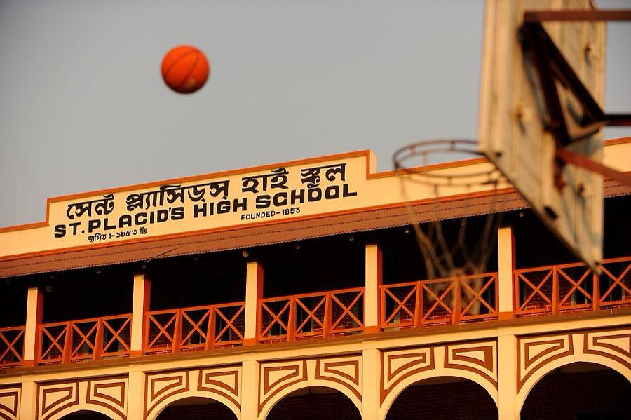
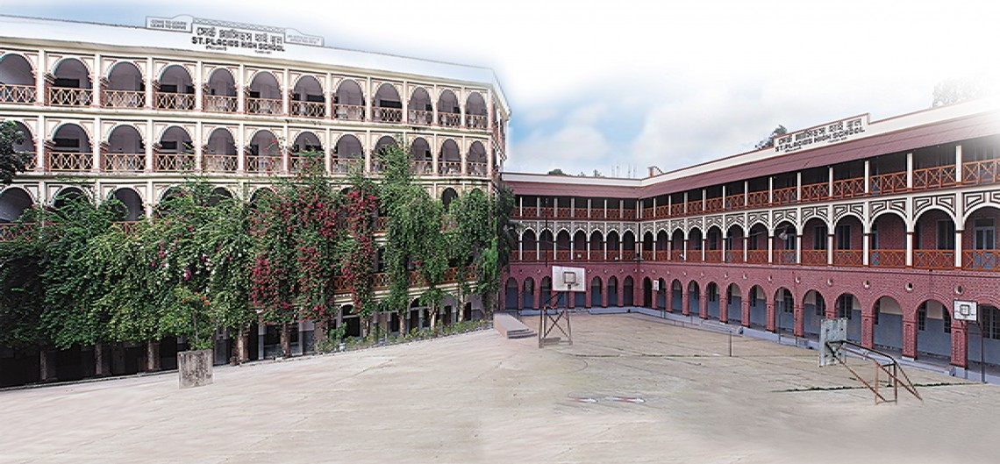

My name is Adriyan Barua Nihon.I am a student.
I read in Saint Placid School & College.
Go to my school

Well,to define myself:
- Firstly, I am a very simple boy.
- Secondly, I try to be honest in every possible way
- Thirdly,I like playing football
- Fourthly: I like painting
My Residence status
I live at Pathorghata in Chittagong
My village is situated at Shilok.
I don't get the opportunity much to go to my village a lot due to academic pressure.
Here I am.... ⇒ Denesh Barua Pantho ⇐, his Uncle ®বাপের হোটেল.
Who doesn't earn a single ৳ , let alone ½ dollar $ / penny ¢ / pound £ or Yen ¥
About My school
-
Founded in 1853:
The school was founded by the Anglo-Belgian Benedictines and is one of the oldest educational
institutions in Bangladesh.

-
Catholic school:
It is a Catholic school run by the Congregation of Holy Cross.
-
Location:
It is located at Pathorghata in Chittagong, Bangladesh.
-
Students:
As of 2024, it had more than 3300 students.
-
Teachers:
It has more than 100 teachers.
-
Faculty:
It has a faculty of 68 teachers.
-
Academics:
The school offers a variety of academic programs,
including primary, secondary, and higher secondary education.
-
Extracurricular activities:
The school also offers a variety of extracurricular activities,such as sports, clubs, and societies.
-
Motto:
The school's motto is "Truth, Service, and Sacrifice.